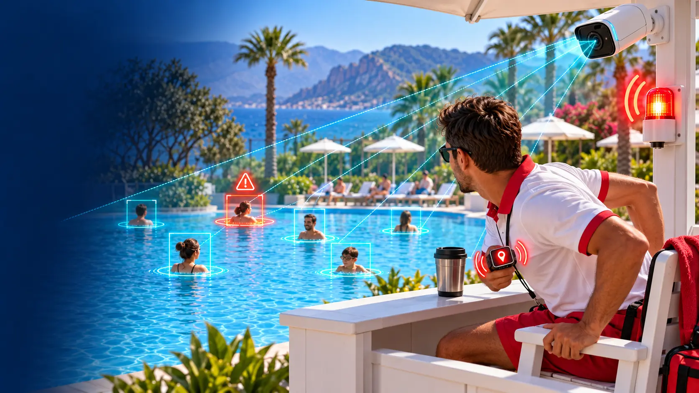

AI Cankurtaran Destek Sistemi
Havuzdaki her yüzücüyü ayrı takip eder; hareketsizlik, dikey batış ve panik hareketi gibi risk işaretlerinde cankurtaranın akıllı saatine konumlu alarm gönderir. Cankurtaranın yerine geçmez, ona yorulmayan bir ikinci göz olur.
- Akıllı saate ve alarm noktalarına anında uyarı
- ISO 20380:2017 uyumlu · KVKK uyumlu yerel veri işleme
- Otel & Resort Havuzları
- Aquapark & Su Oyun Parkları
- Belediye & Site Havuzları